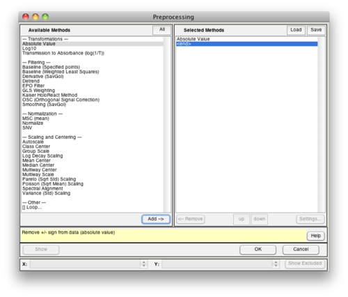
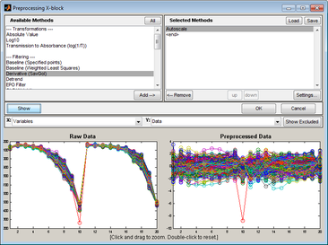
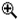
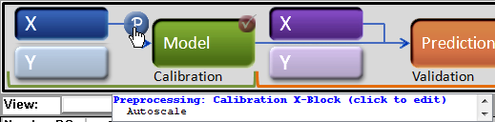
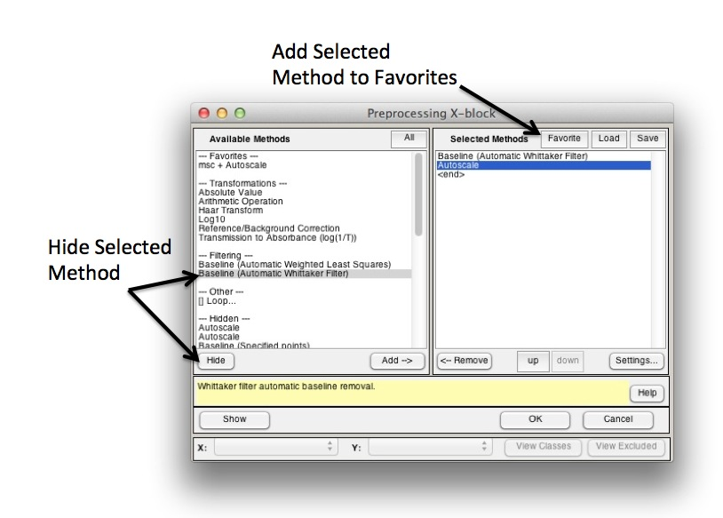

Table of Contents | Previous | Next
Preprocessing Methods
Data preprocessing describes any type of processing procedures that are performed on raw data to prepare it for another processing procedure and ultimately, analysis. Preprocessing linearizes the relationships among the variables in your DataSet and removes extraneous sources of variation that are of no interest to the analysis. A variety of preprocessing methods are available in Solo.
The Preprocessing window section describes the basic steps for setting up preprocessing rules for an analysis and verifying that the rules that you have set up are as you want them.
The Advanced Preprocessing: Introduction page gives a technical discussion of Preprocessing theory.
A thorough discussion of the objectives, theory, and equations associated with specific preprocessing methods can be found in the individual topics listed below:
- Noise, Offset, and Baseline Filtering (e.g. Baselining, Smoothing, Derivatives, Detrending)
- Sample Normalization (e.g. Normalization, MSC, SNV)
- Simple Mathematical Operations (e.g. Absolute Value, Log10, log(1/T) )
- Variable Centering (e.g. Mean Centering, Median Centering, Class Centering)
- Variable Scaling (e.g. Autoscaling, Pareto, Poisson, Log Decay)
- Multiway Centering and Scaling
- Multivariate Filtering (e.g. GLSW, EPO, OSC)
- Variable Alignment (e.g. Registerspec, Correlation Optimized Warping)
- Image-Specific Methods (e.g. Background-Subtraction, Erosion, Smoothing)
Preprocessing Window
You use the Preprocessing window to specify the preprocessing methods that you want to carry out for your data and in what order. The available methods are grouped by type (Filtering, Normalization, and so on) in the Available Methods (left) pane of the window. The methods that you select for preprocessing your data are displayed in the Selected Methods (right) pane. The methods are carried out in the order in which they are listed in the pane. The default selected method is Autoscale.
- Preprocessing window
- 
| 1.
|
To open this window, do one of the following:
|
- In the Analysis window Flowchart pane, click Choose Preprocessing.
|
- In the Status pane, click the Preprocessing icon .
|
- In the Status pane, right-click the Preprocessing icon , and then click Preprocessing > Custom.
|
- On the Analysis window main menu, click Preprocess > X-block or Y-block > Custom.
|
|
|
| 2.
|
In the Available Methods pane, select the method by which you want to preprocess your data, and then click Add.
|
- Note: Some preprocessing methods, for example, the Savitzky-Golay method, require you to specify values for method-specific parameters before you can add the method to the Selected Methods pane.
| 3.
|
Repeat Step 2 until you have selected all of the necessary preprocessing methods.
|
- Note: Regardless of the other preprocessing steps selected, Autoscale or Mean Centering should typically be the final preprocessing step in the series.
| 4.
|
Optionally, after you have selected all of the necessary preprocessing methods, you can do one or more of the following:
|
- To change the order in which the selected preprocessing methods are to be carried out, select a method, and then click Up or Down as needed.
|
- To remove a preprocessing method from the Selected Methods list, select the method, and then click Remove.
|
- To change the parameters values for a method, select the method, and then click Settings to open a dialog box in which you modify the settings.
|
- To show the effect of preprocessing on your data, click Show. The Preprocessing window is updated with two panes. The Raw Data pane (the lower left pane) shows your raw data plotted as a function of all of the samples against all of the variables. The Preprocessed Data pane (the lower right pane) shows the effect of the preprocessing on the raw data.
|
Note: The figure below shows preprocessing using default preprocessing methods on a 200 x 30 DataSet for a simple PCA model.
- Preprocessing using default preprocessing methods on a 200 x 30 DataSet for a simple PCA model
- 
- To zoom in on a region of the raw data, place your mouse pointer in the Raw Data pane. The cursor changes to a Zoom In icon . Drag your cursor around the region of interest. A box is formed around the area that being reduced for viewing. The x axes on the two panes are linked, so as you change the focus in the Raw Data pane, the focus is changed to the same region in the Preprocessed Data pane.
|
- To reset the view to the original view, double-click in the Raw Data pane, or right-click in the Raw Data pane to open a context menu with options for Zooming Out, Resetting to the Original View, and other options.
|
After you have selected preprocessing methods for your data, you can point your mouse cursor on the Preprocessing icon for a control in which you have loaded data. Tooltip text opens with preprocessing information.
- Tooltip text with preprocessing information
- 
Customizing Preprocessing Window
The preprocessing selections can be customized by adding frequently used methods to the "favorites" list or by "hiding" unused methods.
- Add a method to "Favorites" list by selecting it on the Selected Methods (right) panel and clicking the "Favorite" button at the top of the panel.
- Remove a method from "Favorites" by selecting it on the Available Methods panel and clicking the "Delete" button (same as the Hide button in image below).
- Hide a method by selecting it in the Available Methods panel and clicking the "Hide" button [see image below].
- Unhide a method expanding (clicking) the "Hidden" list, selecting the method, and clicking "Unhide" button (same as the Hide button in image below).
- 